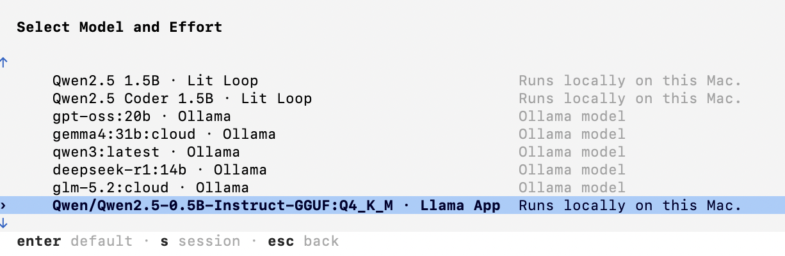
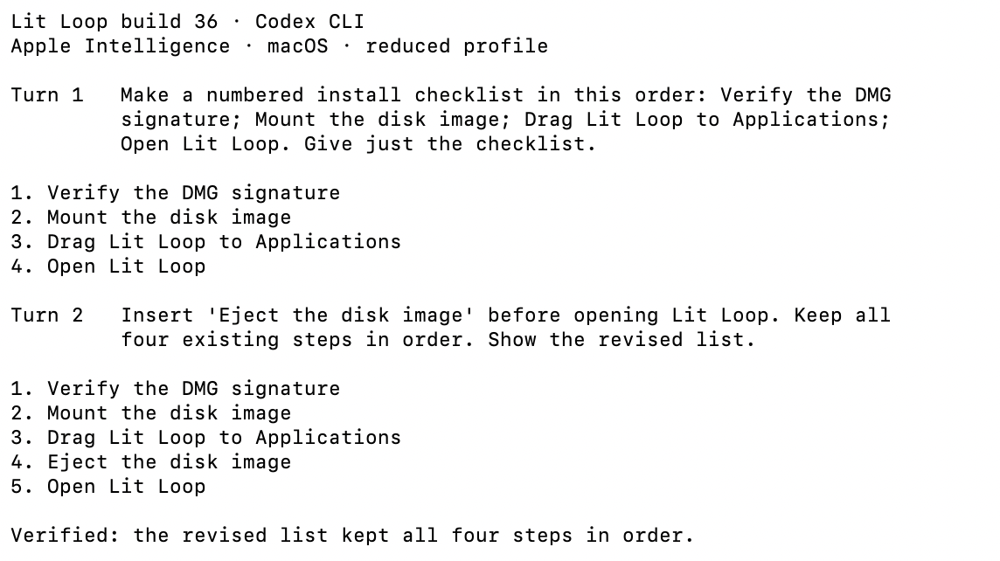

One Codex picker for models across apps
Keep your usual GPT choice and add Apple Intelligence, downloaded MLX chat models, Ollama and Llama App. Choose the provider with the model. Its app handles the request.
How it works
How it works
Connect Lit Loop
Open Apps, connect ChatGPT and confirm the restart when your work is saved. Use Connection help beside the control for offline recovery instructions.
Enable the companions you use
Open Ollama or Llama App, then enable the corresponding switch in Lit Loop. Keep the companion running. Ollama uses the models selected in its ChatGPT settings.
Choose a model in Codex
Start a new chat and select a model. Sending a prompt loads the requested local weights on demand. Each companion controls how long its models stay loaded. To restore the previous Codex setup, disconnect in Lit Loop and restart ChatGPT.
A two-turn Codex example

Already using Ollama?
If you want GPT and Ollama models in Codex, Ollama’s own ChatGPT integration covers that setup. Lit Loop adds MLX chat models, Apple Intelligence and GGUF models from Llama App to the same picker. Ollama still handles its own requests, including remote inference if you choose an Ollama cloud model.
Compatibility
- Apple Intelligence
- Requires an Apple Intelligence–capable Mac with macOS 26 or later and Apple Intelligence enabled. Short prompts worked in a minimal Codex setup. A full tool inventory exceeded the system model’s context window in our default-profile test.
- Apple MLX
- Run supported MLX chat models on Apple silicon with macOS 27 or later. See tested models and memory guidance.
- Ollama & llama.cpp
- Ollama serves its selected models. Llama App serves its installed GGUF chat models. On our M1 Max test Mac, the Qwen 0.5B GGUF answered a default-profile greeting. Ollama’s qwen3 loaded, but the profile exceeded its 16K context. A smaller Ollama model answered with a minimal profile.
Benchmark your models in Codex
- Choose a model and profile. Start with your usual Codex setup. For a comparison with fewer tools, repeat the same prompts with a separate profile that has optional plugins and MCP servers disabled.
- Use the same prompts. Send each prompt in a fresh chat. Try “Reply with exactly READY,” “What is 37 plus 58? Reply with only the integer,” and “In Python, what does
[n * 2 for n in range(3)]evaluate to? Reply only with the resulting list.” Repeat each prompt three times if you can. - Record the results. Time each turn from Send to the first visible reply text and to the end of the reply. Check whether the answer matches the prompt. Count context errors and timeouts, and record the first run separately if the model had to load.
Include your Mac chip, unified memory, macOS version, Lit Loop build, Codex version, exact model and quantization, runtime, context size, and which profile you used. Share the timings and any errors in a public issue. Omit personal prompts, credentials, and local file paths.